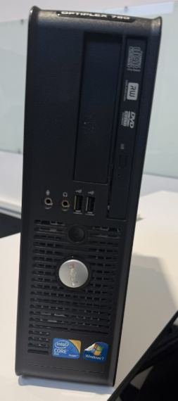
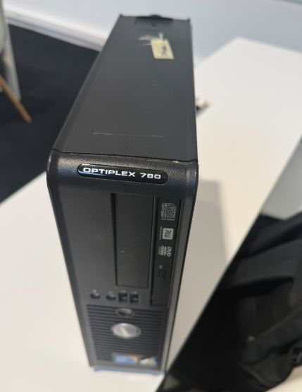
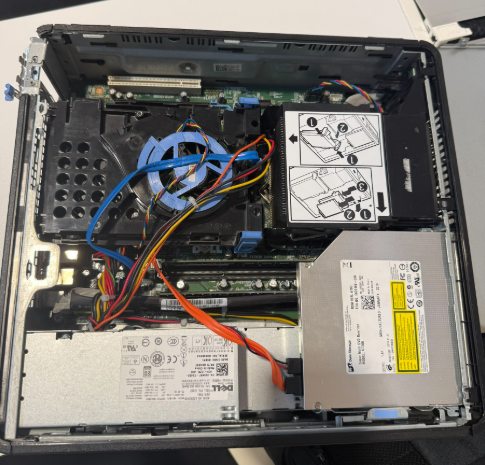
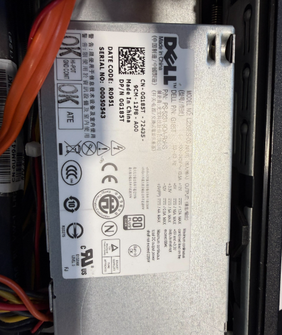
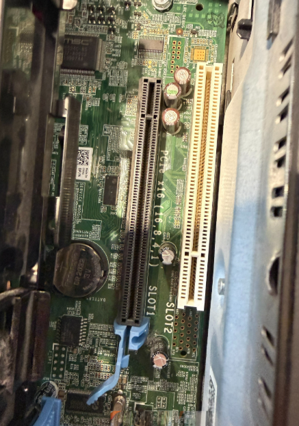
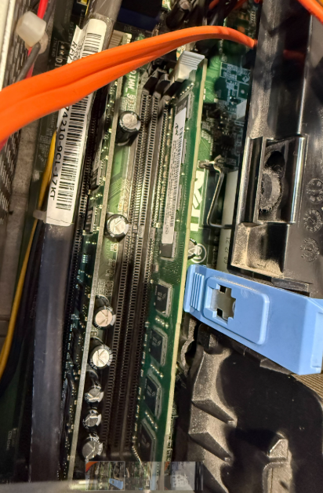

<!-- Copieu el contingut de la vostra plantilla HTML acabada aquí per publicar-la amb GitHub Pages -->
<!doctype html>
<html lang="ca">
<head>
  <meta charset="utf-8" />
  <title>AE-003 · Demo</title>
  <link rel="stylesheet" href="style.css" />
</head>
<body>
</body>
</html>
<div style="max-width: 100% !important; width: 100% !important; display: block !important;">

<h1>DELL OPTIPLEX 780</h1>

<h2>Resum</h2>
<p>
    Caixa d’ordinador DELL OptiPlex 780 amb un ús intensiu i signes de desgast visibles.
    Ideal per a aprofitar peces funcionals o per fer proves, muntatges bàsics o projectes de manteniment/informàtica.
</p>
<ul>
    <li>Perfecta per a recanvis i reaprofitar components</li>
    <li>Bona opció per a experiments, aprenentatge o muntatges de prova</li>
    <li>Estructura sòlida pròpia de la gamma empresarial</li>
</ul>

<h2>Estat</h2>
<p>Segona mà, força utilitzat. Presenta desgast estètic.</p>

<h2>Principals característiques</h2>
<p><strong>PC:</strong> Negre · 235 W</p>
<p><strong>CPU:</strong> Intel® Core™2 Duo E7500 2,93 GHz · 2 nuclis</p>
<p><strong>RAM:</strong> 2 GB DDR3-SDRAM 1333 MHz (1 × 2 GB)</p>
<p><strong>Emmagatzematge:</strong> 250 GB · DVD-RW</p>
<p><strong>Gràfics:</strong> Intel® GMA 4500</p>
<p><strong>Connectivitat:</strong> Ethernet 10/100/1000 Mbit/s</p>
<p><strong>Sistema operatiu:</strong> Windows 7 Professional</p>

<h2>Especificacions</h2>

<table border="1" cellspacing="0" cellpadding="6">
<tr><th>Bloc</th><th>Dada</th></tr>

<tr>
<td><strong>Caixa</strong></td>
<td>Chasis SFF — Ports 3.5": 2 — Ports 5.25": 1 — Color: Negre — 92,6 × 340 × 314 mm — 6,8 kg</td>
</tr>

<tr>
<td><strong>Placa base</strong></td>
<td>Dell E93839 — Chipset Intel Q45 — Socket LGA775 — micro-ATX — SATA: 4 ports</td>
</tr>

<tr>
<td><strong>CPU</strong></td>
<td>Intel Core 2 Duo E7500 — 2 nuclis — 2.93 GHz</td>
</tr>

<tr>
<td><strong>RAM</strong></td>
<td>4 GB DDR3 — 2×2 GB — Fins a 8 GB</td>
</tr>

<tr>
<td><strong>Emmagatzematge</strong></td>
<td>HDD 250 GB, 7200 RPM — DVD-RW</td>
</tr>

<tr>
<td><strong>Gràfics</strong></td>
<td>Intel GMA 4500 — VGA + DisplayPort</td>
</tr>

<tr>
<td><strong>Alimentació</strong></td>
<td>PSU Dell L235ES-00 — 235 W</td>
</tr>

<tr>
<td><strong>Refrigeració</strong></td>
<td>Ventilador SUNON 92 mm</td>
</tr>

<tr>
<td><strong>Connectivitat</strong></td>
<td>USB, àudio, Ethernet</td>
</tr>

<tr>
<td><strong>Expansió</strong></td>
<td>PCIe x16: 1 — PCI: 2</td>
</tr>

<tr>
<td><strong>Manteniment</strong></td>
<td>Pila CMOS CR2032</td>
</tr>

</table>

<h2>Galeria</h2>









</div>
